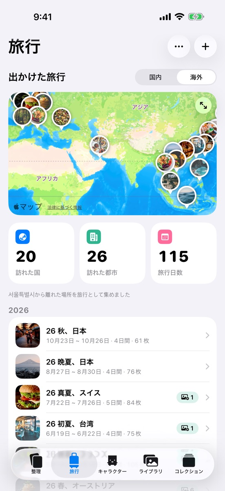
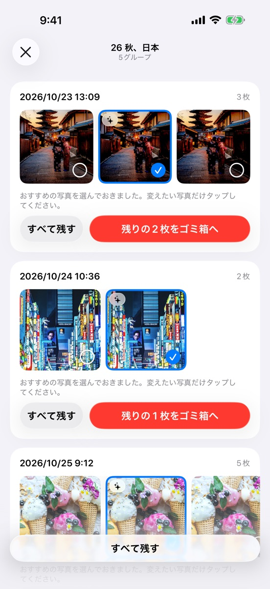
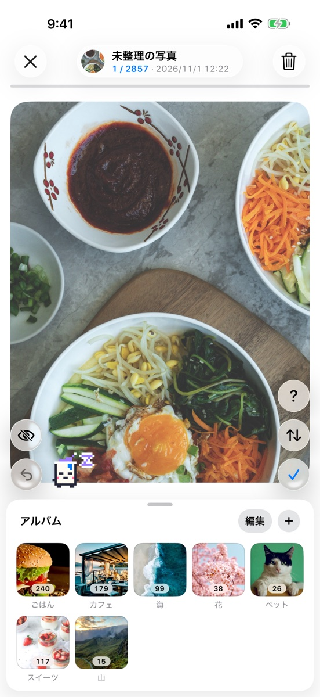
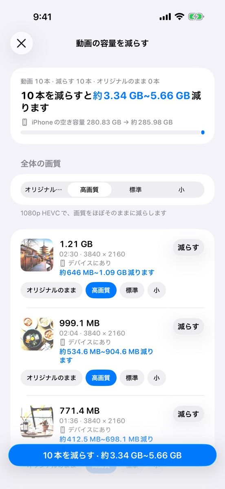
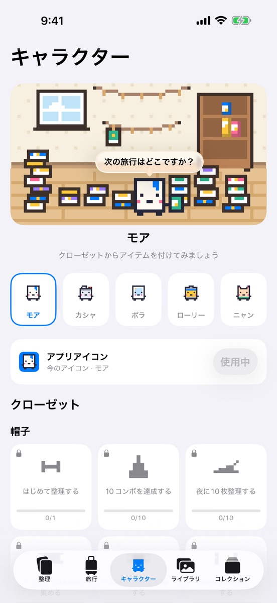
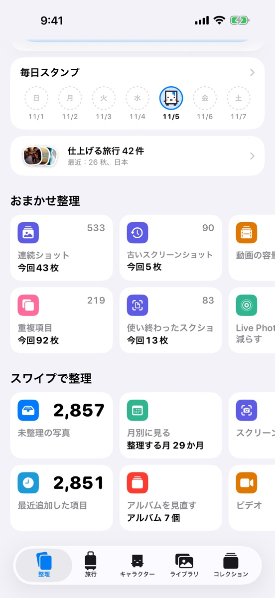
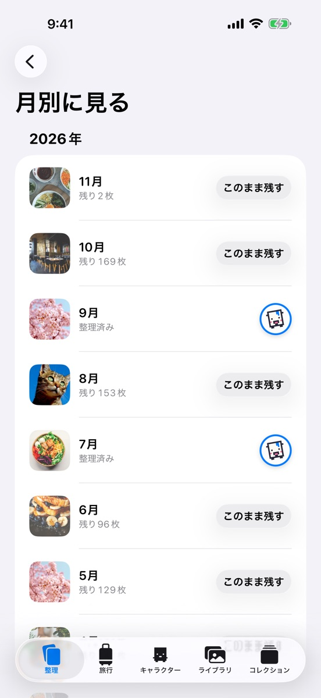
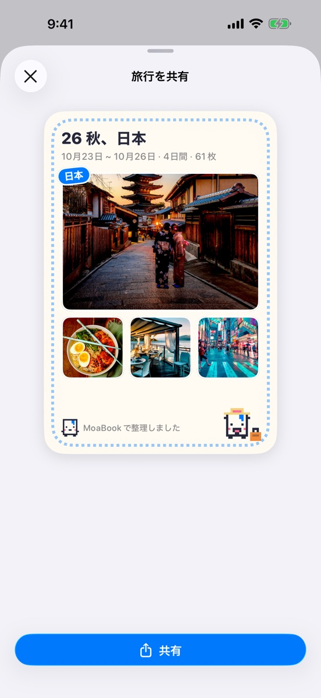
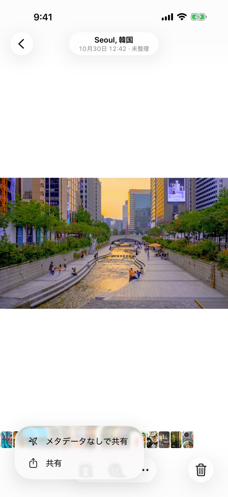
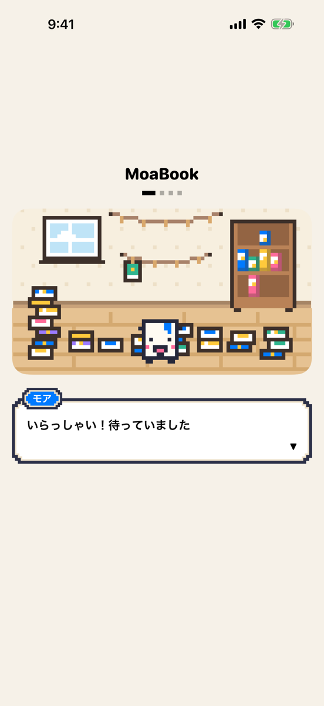

モア旅行ごとにアルバムを作ってみましょう
旅行ごとにアルバムを作ります
旅行の写真が、日常の写真やスクリーンショットに混ざっています。
撮影した日付と場所から出かけた旅行を見つけ、ボタンひとつで旅行ごとにアルバムを作ります。見つけた旅行は地図とリストで見直せます。
モアこんにちは！今日はどの写真から整理しましょうか？
写真はどんどん増えるのに、いざ整理しようとするとどこから手をつければいいか迷いますよね。
最近の旅行ひとつから始めましょう。似ている写真だけを選んでお見せします。

モア旅行ごとにアルバムを作ってみましょう
旅行の写真が、日常の写真やスクリーンショットに混ざっています。
撮影した日付と場所から出かけた旅行を見つけ、ボタンひとつで旅行ごとにアルバムを作ります。見つけた旅行は地図とリストで見直せます。

カシャ似ている写真は1枚だけ選んでみましょう
同じ場面を何枚も撮ると、アルバムがすぐ長くなります。
旅行の中の連続ショットや似ている写真をグループにして見せます。残す写真を選ぶだけで、残りはゴミ箱に入ります。

ポラスワイプしながら1枚ずつ決めます
1枚ずつ開いて削除したりアルバムに入れたりするのは手間がかかります。
写真をめくりながら、上にスワイプするとゴミ箱、✓をタップすると残す、下のアルバムに入れるとそのアルバムに入ります。間違えても「取り消す」ですぐ戻せます。

ローリー動画は削除せずに容量を減らしてみましょう
ストレージは足りないのに、動画は消したくありません。
動画ごとに画質を選んでサイズを減らし、Live Photosは静止画に変換します。どれだけ減るかを先に表示します。

ニャンわたしをタップするとひと言話します
写真は一度整理しても、すぐにまた増えます。
キャラクタータブには、選んだ仲間が住むピクセルの部屋があります。整理していない写真が多いと部屋は散らかっていて、整理するほど仲間が部屋を片づけます。
仲間をタップすると、121種類のセリフの中から今の時間・季節・整理の記録に合ったひと言を話します。チャレンジを達成するとアイテムがもらえてクローゼットで着けられ、アプリアイコンも選んだ仲間に変えられます。

スクリーンショット、認証コードのような使い終わったスクショ、重複写真、書類・レシート、Live Photos、大きな動画を種類別にまとめて見せます。

月ごとに残りの写真をスワイプで整理するか、「このまま残す」でその月をまとめて終わらせます。終わった月には完了スタンプが押されます。

出かけた旅行を地図と日付ごとに見直し、旅行名・日付・写真を入れた共有カードを作って送れます。

写真を送るときに「メタデータなしで共有」を選ぶと、位置情報と撮影情報を消したコピーを送ります。元の写真はそのままです。
最初に開いたときに、いっしょに整理する仲間を選びます。キャラクタータブでいつでも変えられます。
モアこんにちは！わたしはモアです。ページをめくる音、いいでしょう？
